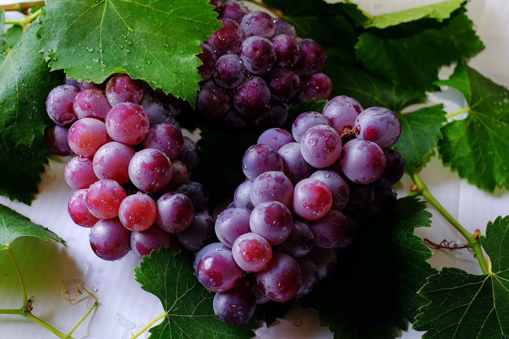

A uva é o fruto da videira ou parreira, uma planta da família Vitaceae. É originária da Ásia e uma das frutas mais antigas utilizadas na alimentação humana. Existem mais de 60 mil variedades da fruta. A cor, o sabor e o tamanho variam de acordo com cada espécie.
